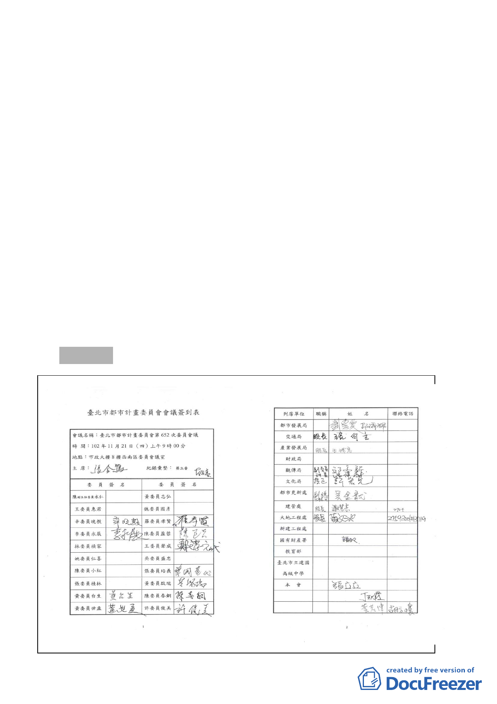

配合都市更新事業計畫興闢，其產權依都市更新事業計畫
捐贈予臺北市所有，後續道路用地管理維護機關為臺北市
政府。本案原計畫道路已開闢完成，變更後之計畫道路開
闢經費應由實施者負擔，不得申請容積獎勵」。
（三）計畫書第 25 頁其他，依市府本次會議所送修正對照表增列
回復原都市計畫之規定，文字並修正為「後續都市更新事
業如有無法賡續實施之情事，經本市都市更新及爭議處理
審議會確認後，市政府應回復原都市計畫」。
（四）計畫區退縮留設之帶狀式開放空間應規劃留設自行車道。
（五）其他圖面及第 13 頁周邊都市更新辦理情形、第 16 頁地區
願景及目標之文字說明，依市府本次會議所送補充資料之
修正對照表內容修正通過。
二、附帶決議：本案應俟權利變換計畫經本市都市更新及爭議處
理審議會審議通過後、核定前，再行發布實施。
參、散會（11：15）
- 14 -